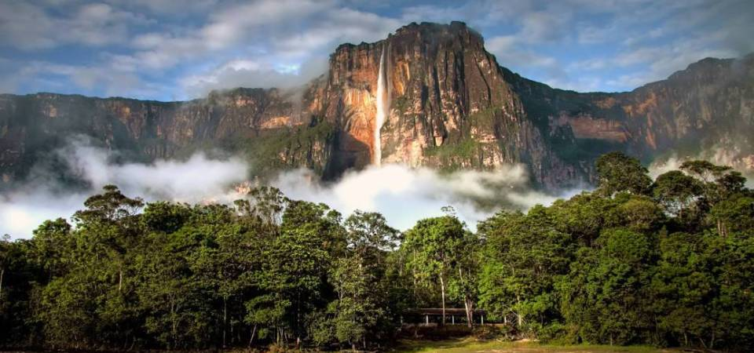
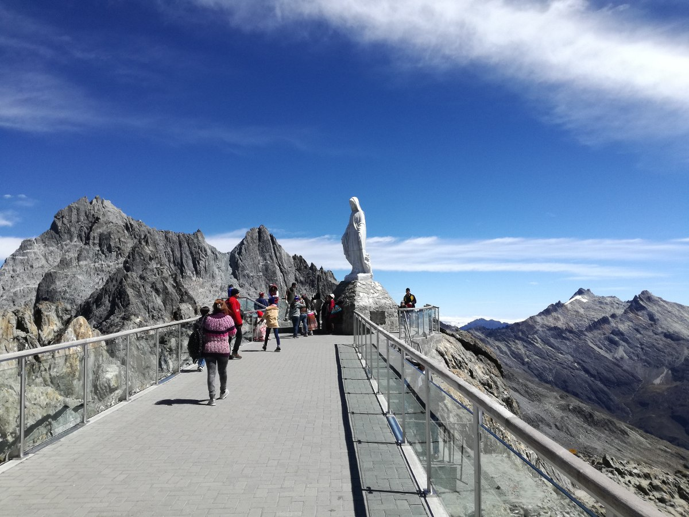
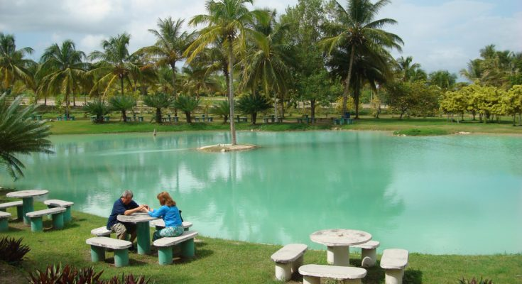

Venezuela es ciertamente un país privilegiado, lleno de encantos y prodigios, que Dios lo debió crear en una tarde en que andaba especialmente feliz. Realmente, Venezuela lo tiene todo: no sólo inmensas riquezas de materias primas: petróleo, hierro, oro, aluminio, carbón, pesca, productos agrícolas y ganaderos…, sino que es imposible imaginar un país más hermoso.
Pero la principal riqueza de Venezuela no es el petróleo, ni su mayor belleza es el Salto Ángel o la Gran Sabana. La riqueza y belleza más importantes de Venezuela somos su gente.